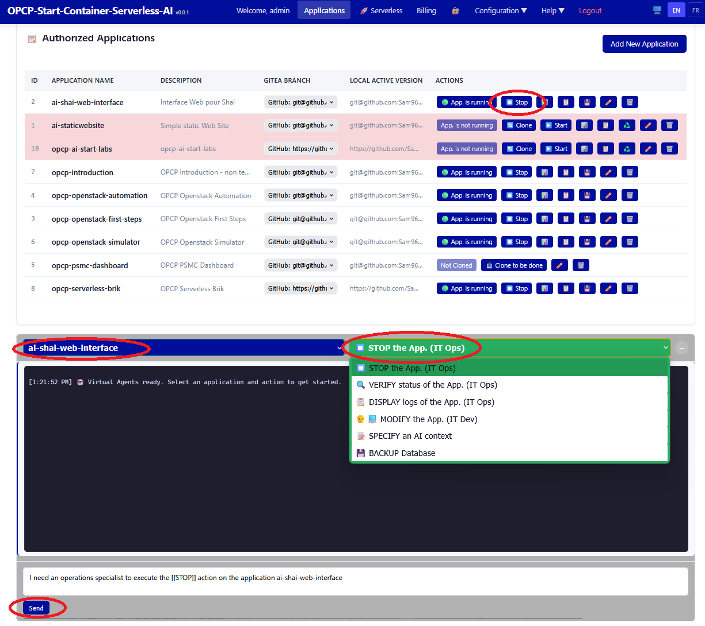

Stopping Applications
Learn how to gracefully stop applications, understand the shutdown process, and manage resources after stopping containers.
Prerequisites
- Completed: Starting Applications
- At least one running application
What You Will Learn
- Graceful application shutdown procedures
- Stopping individual applications vs. the entire platform
- Cleaning up Docker resources (volumes, networks)
- Understanding shutdown hooks and data persistence
Stopping an Application

Use docker-compose to gracefully stop application containers:
# Stop a specific application
cd ~/deployments/<app_name>
docker-compose down
# Stop with volume cleanup (removes data)
docker-compose down -vStopping the Entire Platform
# Navigate to the platform directory
cd ~/opcp-ai-powered-store
# Stop all platform services
docker-compose down
Warning: Using
-v flag will remove associated volumes and data. Always create a backup before doing so.
Lab Available: A hands-on lab module accompanies this lesson. Start the lab to practice in an isolated environment.